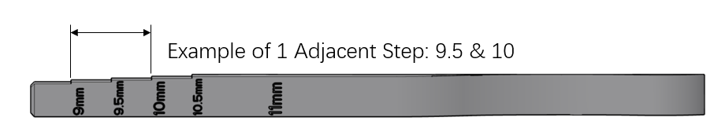
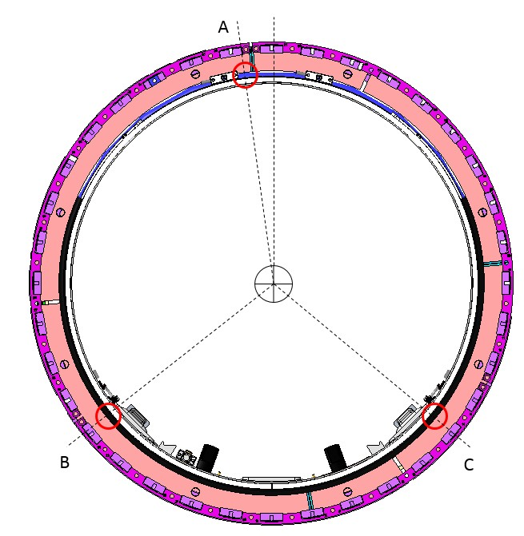
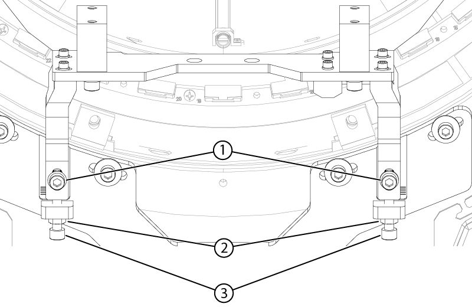
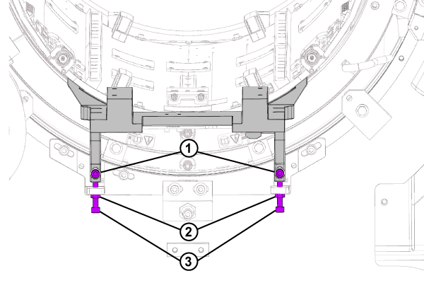

- Object ID: 00000018WIA30EA3C20GYZ
- Topic ID: id_2008328 Version: 2.13
- Date: Sep 11, 2025, 10:05:01 AM
AP RF body coil centering adjustment
Adjust the body coil vertically.
Procedure
- Study the AP adjustment gap option matrix.
Table 1. AP adjustment gap option matrix If gap at A = Then gap at B must = Then gap at C must = 9 9 or 9.5 9 or 9.5 9.5 9.5 or 10 9.5 or 10 10 10 or 10.5 10 or 10.5 10.5 10.5 or 11 10.5 or 11 11 11 11 Figure 1. Step gauge measurement tool 
- On the patient end, check and record the gaps between body coil and inner gradient coil at locations A, B, and C using the step gauge.
- Slide the step gauge between the body coil outside surface and the gradient coil inside surface until it will not slide any further. Note Keep the gauge flat against the outside ledge on body coil cylinder. The value on the last step to slide between the body coil and the gradient coil indicates the gap. The step gauge is marked in mm. Do not force the gauge into the gap.
Figure 2. Measurement positions A, B, and C (example) 
- Slide the step gauge between the body coil outside surface and the gradient coil inside surface until it will not slide any further.
- Determine if the adjustments are within the specifications using the AP adjustment gap option matrix.
- Specification: Differential of Gap A, Gap B, and Gap C ≤ 0.5 mm (identical or no more than 1 adjacent step).
- Options of 1 adjacent step: a) 9 and 9.5; b) 9.5 and 10; c) 10 and 10.5; d) 10.5 and 11.
- If the gaps do not satisfy the specification, adjust the AP position using the support bracket to meet the specification as follows:
- Loosen the two bottom locking nuts and the two front locking screws.
- Adjust AP position by turning the bottom adjustment screws.Note 1 full clockwise turn → 1.5 mm up, 1 full counterclockwise turn → 1.5 mm down.
- Tighten the two front locking screws and two bottom locking nuts to lock the bracket in place.
- Recheck the measurements and repeat until the correct position is attained.
Figure 3. AP adjustment of bracket (AP position) - patient end 
1 Front locking screws 2 Bottom locking nuts 3 Bottom adjustment screws - On the service end, check and record the gaps between body coil and inner gradient coil at locations A, B, and C using the step gauge.
- Slide the step gauge between the body coil outside surface and the gradient coil inside surface until it will not slide any further. Note Keep the gauge flat against the outside ledge on body coil cylinder. The value on the last step to slide between the body coil and the gradient coil indicates the gap. The step gauge is marked in mm. Do not force the gauge into the gap.
Figure 4. Measurement positions A, B, and C (example) - Slide the step gauge between the body coil outside surface and the gradient coil inside surface until it will not slide any further.
- Determine if the adjustments are within the specifications using the AP adjustment gap option matrix.
- Specification: Differential of Gap A, Gap B, and Gap C ≤ 0.5 mm (identical or no more than 1 adjacent step).
- Options of 1 adjacent step: a) 9 and 9.5; b) 9.5 and 10; c) 10 and 10.5; d) 10.5 and 11.
- If the gaps do not satisfy the specification, adjust the AP position using the support bracket to meet the specification as follows:
- Loosen the two bottom locking nuts and the two front locking screws.
- Adjust the AP position by turning the bottom adjustment screws.Note 1 full clockwise turn → 1.5 mm up, 1 full counterclockwise turn → 1.5 mm down.
- Tighten the two front adjustment screws and two bottom locking nuts to lock the bracket in place.
- Recheck the measurements and repeat until the correct position is attained.
Figure 5. AP adjustment bracket (AP position) - service end 
1 Front adjustment screws 2 Bottom locking nuts 3 Bottom adjustment screws